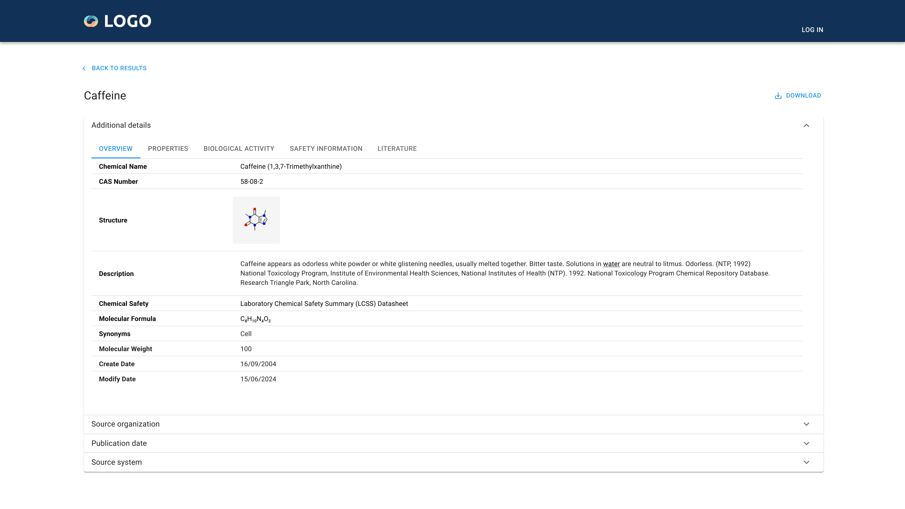

Case study · Web & mobile app
Chemical Data
Turning chemical records scattered across legacy systems into one searchable, comparable, mobile-ready experience for scientists and business analysts.

The problem
Chemists and business analysts at the client's organization had to pull data from several incompatible systems and reconcile it by hand before they could compare substances or answer a business question. This was a slow and error prone process for two very different types of users.
Outcome
- (01)Unified search across scientific & business data
- (02)Side-by-side substance comparison
- (03)Responsive web & mobile experience
(01) Process
Designing a platform from the ground up
Discover
Stakeholder & user research
Define
Constraints & problem framing
Ideate
Workflows & concept exploration
Design
High-fidelity screens & prototype
(02) Research
Understanding two very different users
Chemist / scientific user
Needs precise, traceable scientific data and the ability to cross-reference safety and composition details quickly.
Business analyst
Needs aggregated, comparable figures without wading through scientific jargon or raw lab data.
Pain points
- Data spread across disconnected systems
- Manual cross-referencing of values
- Inconsistent terminology between teams
- No reliable mobile access
User needs
- Fast, filterable search
- Side-by-side comparison of substances
- One trusted source of truth
- Access to key data on the go
Business constraints
- Regulatory compliance requirements
- Must integrate with legacy systems
- Wide range of user technical fluency
- Tight engineering timeline
“I don't want to open five tools just to compare two substances.”
“I trust the data more when I can see exactly where each figure came from.”
Methods used: stakeholder interviews, competitive analysis, collaborative workshops, user flows, wireframing and prototyping, usability testing.
(03) Ideation & wireframing
Mapping two workflows through one product
Exploration focused on how far to separate the two audiences. Rather than building two apps, the flows below share the same shell and diverge only where the underlying need actually differs.
General user (simple login)
- Landing page
- Sign up / sign in
- Home dashboard
- Search
- Comparison view
- Export / share results
Specialized chemist (login)
- Landing page
- Chemist sign in
- Advanced search
- Detailed substance record
- Cross-reference & annotate
- Export detailed report
(04) Prototyping & iteration
Major screens
Mobile app
Login
Email and password with remember-me and a clear path to create an account.
Home - search
One search field front and centre, with example queries.
Results
Scannable rows with structure thumbnails, bookmarks and download.
Quick view
A bottom sheet previews structure and key identifiers; “More” opens the full record.
Additional details
Full record on mobile, with tabs for Overview, Properties, Activity and Safety.
Web app
Log in
The same log-in pattern, centred on the wider canvas.
Main search
The landing page: a short description and a single search field with a Find action.
Search results
Filters for type, max phase and molecular weight sit beside the results list. Each row expands to show the structure and key identifiers without leaving the page.
Chemical details
The record page: Overview, Properties, Activity, Safety and Literature tabs in one card.
(05) Outcome & lessons learned
Impact
- (01)Unified access to scientific & business data
- (02)Simplified a fragmented search process
- (03)Reduced friction between technical & non-technical users
- (04)Faster, more confident decision-making
What I learned
Designing one flexible search architecture, simple by default with a clear path to depth, kept the product coherent and made it easier for both teams to trust the same data. In hindsight, bringing chemists into usability testing earlier would have surfaced the need for source traceability sooner in the process.